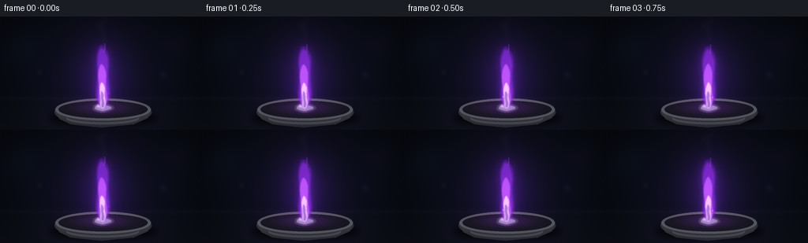
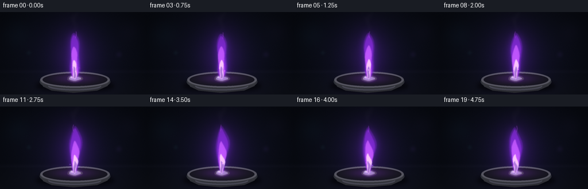
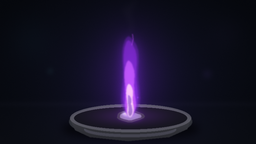
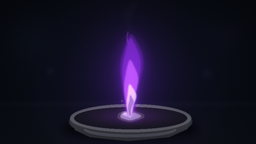

CODING AGENTS AS PIXEL WORLD MODELS
traex/GPT-5.6-Sol · phygen_130
点击播放 · 原生 RGB 像素
逐轮保存的候选
回放视频、检查图与代码变化。
每份候选均可单独播放。实际图片检查记录在下方工具轨迹中。
候选 01播放与检查图
点击播放 · 原生 RGB 像素


展开代码变化
--- 上一保存版本
+++ 本次保存版本
@@ -0,0 +1,213 @@
+from pathlib import Path
+import math, json
+import numpy as np
+from PIL import Image, ImageDraw, ImageFilter
+import artifact_io
+
+ROOT = Path(__file__).resolve().parent
+SPEC = json.loads((ROOT / 'task_spec.json').read_text())
+W, H, N = SPEC['width'], SPEC['height'], SPEC['frames']
+S = 3
+w, h = W*S, H*S
+rng = np.random.default_rng(130)
+
+# Fixed fine-grain texture, stable from frame to frame.
+texture = rng.normal(0, 1, (h, w)).astype(np.float32)
+# Smooth laboratory background variation.
+yy, xx = np.mgrid[0:h, 0:w]
+X, Y = xx/S, yy/S
+
+
+def arr(img):
+ return np.asarray(img, dtype=np.float32)
+
+def mask_polygon(points, blur=0):
+ m = Image.new('L', (w,h), 0)
+ ImageDraw.Draw(m).polygon([(int(x*S),int(y*S)) for x,y in points], fill=255)
+ if blur: m = m.filter(ImageFilter.GaussianBlur(blur*S))
+ return np.asarray(m, dtype=np.float32)/255.0
+
+def mask_ellipse(box, blur=0, fill=255):
+ m = Image.new('L', (w,h), 0)
+ ImageDraw.Draw(m).ellipse(tuple(int(v*S) for v in box), fill=fill)
+ if blur: m = m.filter(ImageFilter.GaussianBlur(blur*S))
+ return np.asarray(m, dtype=np.float32)/255.0
+
+def composite(base, color, alpha):
+ a = np.clip(alpha[...,None],0,1)
+ return base*(1-a)+np.asarray(color,np.float32)*a
+
+def addlight(base, color, alpha):
+ return np.clip(base + np.asarray(color,np.float32)*alpha[...,None],0,255)
+
+def flame_shape(t, top, base_y, base_x, width, phase, asym=0.0):
+ # A closed, smooth lick generated by a center-line plus width profile.
+ us = np.linspace(0,1,55) # 0 bottom, 1 tip
+ ys = base_y + (top-base_y)*us
+ # small coherent dancing motion, rooted firmly at the fuel
+ cx = base_x + (1.8*np.sin(phase+us*4.8)+1.0*np.sin(phase*.63+us*9.1))*us**1.35
+ cx += asym*np.sin(math.pi*us)*us
+ prof = (np.sin(np.pi*us)**0.60) * (0.80+0.20*np.cos(2.0*np.pi*us+phase*.35))
+ prof *= (1-0.24*us)
+ half = width*prof
+ left = list(zip(cx-half*(.93+.08*np.sin(us*8+phase)), ys))
+ right = list(zip((cx+half*(1.05+.07*np.cos(us*7-phase)))[::-1], ys[::-1]))
+ return left+right
+
+def stroke_curve(points, width_px, color, blur=0):
+ layer=Image.new('RGBA',(w,h),(0,0,0,0)); d=ImageDraw.Draw(layer)
+ pts=[(int(a*S),int(b*S)) for a,b in points]
+ d.line(pts, fill=color, width=max(1,int(width_px*S)), joint='curve')
+ if blur: layer=layer.filter(ImageFilter.GaussianBlur(blur*S))
+ return layer
+
+frames=[]
+for fi in range(N):
+ t=fi/N
+ phase=2*math.pi*t
+ # Deep navy-black lab backdrop and charcoal bench.
+ radial=np.exp(-(((X-130)/100)**2+((Y-72)/87)**2))
+ base=np.empty((h,w,3),np.float32)
+ base[:,:,0]=8+6*radial
+ base[:,:,1]=11+5*radial
+ base[:,:,2]=18+12*radial
+ # rear surface gradient and stable photographic grain
+ bench=np.clip((Y-96)/48,0,1)
+ base += bench[...,None]*np.array([7,7,9],np.float32)
+ base += texture[...,None]*0.72
+
+ # Defocused glassware / indicator lamps in distant laboratory.
+ for bx,by,br,c,a in [(30,40,18,(20,40,58),.20),(225,34,14,(28,25,50),.20),
+ (207,74,4,(63,45,111),.18),(50,71,3,(38,80,86),.16)]:
+ glow=mask_ellipse((bx-br,by-br,bx+br,by+br),br*.6)
+ base=composite(base,c,glow*a)
+ # horizon and soft worktop highlight
+ horizon=np.exp(-((Y-104)/2.6)**2)
+ base=addlight(base,(10,9,13),horizon*.30)
+
+ # Flame glow falling across bench and backdrop.
+ flick=.97+.035*math.sin(phase*2.1)+.02*math.sin(phase*4.7+1)
+ halo=np.exp(-(((X-130)/31)**2+((Y-77)/47)**2))*flick
+ base=addlight(base,(34,8,58),halo*.72)
+ base=addlight(base,(12,4,30),np.exp(-(((X-130)/62)**2+((Y-88)/62)**2))*.47)
+
+ # Dish shadow.
+ sh=mask_ellipse((62,116,199,141),4)
+ base=composite(base,(0,0,2),sh*.64)
+
+ # Ceramic evaporating dish, with rolled rim and purple light bounce.
+ dish=mask_ellipse((69,105,192,138),.25)
+ base=composite(base,(54,57,65),dish*.96)
+ inner=mask_ellipse((74,106,187,130),.3)
+ base=composite(base,(20,21,28),inner*.94)
+ # front wall lower half via polygon bounded by curved visual approximation
+ front_pts=[(70,119),(75,130),(90,137),(128,141),(169,137),(187,129),(191,118),
+ (181,125),(159,130),(128,132),(95,129),(78,124)]
+ front=mask_polygon(front_pts,.2)
+ base=composite(base,(68,69,77),front*.97)
+ # gentle ceramic shading
+ lower=np.clip((Y-118)/23,0,1)
+ base=composite(base,(28,29,35),front*lower*.52)
+ # rim edges
+ rim_outer=mask_ellipse((70,104,191,132),.15)
+ rim_inner=mask_ellipse((74,107,187,129),.15)
+ ring=np.clip(rim_outer-rim_inner,0,1)
+ base=composite(base,(109,109,120),ring*.75)
+ # violet cast on inside and rim
+ cast=np.exp(-(((X-130)/35)**2+((Y-116)/9)**2))
+ base=addlight(base,(48,13,76),cast*(inner*.75+ring*.52))
+ # tiny specular along front lip
+ hi=mask_ellipse((84,122,176,137),.15)-mask_ellipse((83,119,177,134),.15)
+ base=addlight(base,(48,46,58),np.clip(hi,0,1)*.55)
+
+ # Metallic potassium piece: irregular soft silvery lump, steadily getting a touch smaller.
+ shrink=1-.055*t
+ px,py=130,116
+ potpts=[]
+ for k in range(18):
+ a=2*math.pi*k/18
+ rx=13.4*shrink*(1+.09*math.sin(3*a+1.2))
+ ry=5.4*shrink*(1+.12*math.cos(4*a))
+ potpts.append((px+rx*math.cos(a),py+ry*math.sin(a)))
+ pm=mask_polygon(potpts,.35)
+ base=composite(base,(128,128,139),pm*.97)
+ # oxidized/melting edge and hot lilac contact region
+ edge=pm-mask_polygon([(130+(x-130)*.80,116+(y-116)*.72) for x,y in potpts],.2)
+ base=composite(base,(59,49,69),np.clip(edge,0,1)*.85)
+ spec=mask_ellipse((122,111,133,115),1.2)
+ base=addlight(base,(115,120,127),spec*pm*.75)
+ molten=mask_ellipse((119,112,142,121),2.0)
+ base=addlight(base,(55,14,85),molten*.80)
+
+ # Soft outer lilac flame: tall, stable, with restrained coherent sway.
+ base_y=116.5
+ top=35.5 + 1.8*math.sin(phase*1.1+0.4)+.8*math.sin(phase*2.8)
+ outer_pts=flame_shape(t,top,base_y,130,15.2,phase,2.2*math.sin(phase*.73))
+ om=mask_polygon(outer_pts,.7)
+ og=np.asarray(Image.fromarray((om*255).astype('uint8')).filter(ImageFilter.GaussianBlur(6*S)),np.float32)/255
+ base=addlight(base,(45,9,83),og*.92)
+ base=composite(base,(111,35,188),om*.47)
+ # saturated violet sheath following outer contour
+ sheath_pts=flame_shape(t,top+4,base_y-1,130,11.8,phase+.18,1.3*math.sin(phase*.8))
+ sm=mask_polygon(sheath_pts,.65)
+ base=composite(base,(139,45,224),sm*.58)
+
+ # Inner translucent pink-lilac body.
+ inner_top=59+1.8*math.sin(phase*1.65+1)
+ inner_pts=flame_shape(t,inner_top,base_y,130,8.8,phase+.55,-.5)
+ im=mask_polygon(inner_pts,.6)
+ base=composite(base,(213,104,255),im*.62)
+ # White-lavender hot core at fuel surface.
+ core_top=83+1.1*math.sin(phase*2.0+.7)
+ core_pts=flame_shape(t,core_top,base_y+1,130,5.7,phase+.9,.2)
+ cm=mask_polygon(core_pts,.52)
+ base=composite(base,(245,220,255),cm*.78)
+ # Hollow dark-blue separation immediately over metal, characteristic layered flame.
+ hollow_pts=flame_shape(t,95,116,130,2.9,phase+.4,0)
+ hm=mask_polygon(hollow_pts,.45)
+ base=composite(base,(72,32,123),hm*.46)
+
+ # Thin dancing tip extension, kept connected to main plume.
+ tipx=130+2.3*math.sin(phase+1.0)
+ tip=[(tipx,top+9),(tipx+1.4*math.sin(phase+2),top+3),(tipx+.5,top-2)]
+ tl=stroke_curve(tip,1.25,(182,76,246,180),.45)
+ rgba=np.asarray(tl,np.float32); a=rgba[:,:,3]/255
+ base=composite(base,(182,76,246),a*.65)
+
+ # A few tiny, brief potassium embers near the base; not enough to disrupt steady burn.
+ for j in range(3):
+ q=(fi*.23+j*.37)%1
+ ex=130+(j-1)*6+2*math.sin(phase*1.4+j)
+ ey=110-17*q
+ life=math.sin(math.pi*q)**5
+ em=mask_ellipse((ex-.65,ey-.65,ex+.65,ey+.65),.45)
+ base=addlight(base,(145,72,215),em*life*.85)
+
+ # Delicate smoke wisps above, tinted by violet emission.
+ smoke=Image.new('RGBA',(w,h),(0,0,0,0))
+ sd=ImageDraw.Draw(smoke)
+ for j in range(3):
+ pts=[]
+ for q in np.linspace(0,1,24):
+ sy=33-q*26-j*3
+ sx=130+2.2*math.sin(phase*.35+j+q*5)+q*(j-1)*4
+ pts.append((int(sx*S),int(sy*S)))
+ sd.line(pts,fill=(104,89,127,20-j*3),width=(2+j)*S)
+ smoke=smoke.filter(ImageFilter.GaussianBlur(2.1*S))
+ sa=np.asarray(smoke,np.float32)[:,:,3]/255
+ base=composite(base,(91,83,105),sa)
+
+ # Optical bloom around brightest flame portions.
+ bright=np.clip(cm*.9+im*.35+sm*.12,0,1)
+ bloom=np.asarray(Image.fromarray((bright*255).astype('uint8')).filter(ImageFilter.GaussianBlur(3.4*S)),np.float32)/255
+ base=addlight(base,(42,15,63),bloom*.72)
+
+ # subtle vignette and final photographic sampling
+ vign=np.clip(1-0.20*((X-W/2)/(W/2))**2-0.18*((Y-H/2)/(H/2))**2,.68,1)
+ base*=vign[...,None]
+ img=Image.fromarray(np.uint8(np.clip(base,0,255)),'RGB').resize((W,H),Image.Resampling.LANCZOS)
+ frames.append(np.asarray(img,dtype=np.uint8))
+
+frames=np.stack(frames)
+artifact_io.save(frames, ROOT)
+print('saved', frames.shape, frames.dtype, 'range', frames.min(), frames.max())
可观测工具轨迹
实际执行的命令与返回图片。
命令 1exit 0
/bin/bash -lc "cat prompt.txt && printf '\\n---RULES---\\n' && cat GENERATION_RULES.md && printf '\\n---SPEC---\\n' && cat task_spec.json"
命令 2exit 0
/bin/bash -lc "find . -maxdepth 2 -type f -printf '%p %s bytes\\n' | sort"
命令 3exit 0
/bin/bash -lc 'cat artifact_io.py'
命令 4exit 0
/bin/bash -lc "cat > generate.py <<'PY'
from pathlib import Path
import math, json
import numpy as np
from PIL import Image, ImageDraw, ImageFilter
import artifact_io
ROOT = Path(__file__).resolve().parent
SPEC = json.loads((ROOT / 'task_spec.json').read_text())
W, H, N = SPEC['width'], SPEC['height'], SPEC['frames']
S = 3
w, h = W*S, H*S
rng = np.random.default_rng(130)
# Fixed fine-grain texture, stable from frame to frame.
texture = rng.normal(0, 1, (h, w)).astype(np.float32)
# Smooth laboratory background variation.
yy, xx = np.mgrid[0:h, 0:w]
X, Y = xx/S, yy/S
def arr(img):
return np.asarray(img, dtype=np.float32)
def mask_polygon(points, blur=0):
m = Image.new('L', (w,h), 0)
ImageDraw.Draw(m).polygon([(int(x*S),int(y*S)) for x,y in points], fill=255)
if blur: m = m.filter(ImageFilter.GaussianBlur(blur*S))
return np.asarray(m, dtype=np.float32)/255.0
def mask_ellipse(box, blur=0, fill=255):
m = Image.new('L', (w,h), 0)
ImageDraw.Draw(m).ellipse(tuple(int(v*S) for v in box), fill=fill)
if blur: m = m.filter(ImageFilter.GaussianBlur(blur*S))
return np.asarray(m, dtype=np.float32)/255.0
def composite(base, color, alpha):
a = np.clip(alpha[...,None],0,1)
return base*(1-a)+np.asarray(color,np.float32)*a
def addlight(base, color, alpha):
return np.clip(base + np.asarray(color,np.float32)*alpha[...,None],0,255)
def flame_shape(t, top, base_y, base_x, width, phase, asym=0.0):
# A closed, smooth lick generated by a center-line plus width profile.
us = np.linspace(0,1,55) # 0 bottom, 1 tip
ys = base_y + (top-base_y)*us
# small coherent dancing motion, rooted firmly at the fuel
cx = base_x + (1.8*np.sin(phase+us*4.8)+1.0*np.sin(phase*.63+us*9.1))*us**1.35
cx += asym*np.sin(math.pi*us)*us
prof = (np.sin(np.pi*us)**0.60) * (0.80+0.20*np.cos(2.0*np.pi*us+phase*.35))
prof *= (1-0.24*us)
half = width*prof
left = list(zip(cx-half*(.93+.08*np.sin(us*8+phase)), ys))
right = list(zip((cx+half*(1.05+.07*np.cos(us*7-phase)))[::-1], ys[::-1]))
return left+right
def stroke_curve(points, width_px, color, blur=0):
layer=Image.new('RGBA',(w,h),(0,0,0,0)); d=ImageDraw.Draw(layer)
pts=[(int(a*S),int(b*S)) for a,b in points]
d.line(pts, fill=color, width=max(1,int(width_px*S)), joint='curve')
if blur: layer=layer.filter(ImageFilter.GaussianBlur(blur*S))
return layer
frames=[]
for fi in range(N):
t=fi/N
phase=2*math.pi*t
# Deep navy-black lab backdrop and charcoal bench.
radial=np.exp(-(((X-130)/100)**2+((Y-72)/87)**2))
base=np.empty((h,w,3),np.float32)
base[:,:,0]=8+6*radial
base[:,:,1]=11+5*radial
base[:,:,2]=18+12*radial
# rear surface gradient and stable photographic grain
bench=np.clip((Y-96)/48,0,1)
base += bench[...,None]*np.array([7,7,9],np.float32)
base += texture[...,None]*0.72
# Defocused glassware / indicator lamps in distant laboratory.
for bx,by,br,c,a in [(30,40,18,(20,40,58),.20),(225,34,14,(28,25,50),.20),
(207,74,4,(63,45,111),.18),(50,71,3,(38,80,86),.16)]:
glow=mask_ellipse((bx-br,by-br,bx+br,by+br),br*.6)
base=composite(base,c,glow*a)
# horizon and soft worktop highlight
horizon=np.exp(-((Y-104)/2.6)**2)
base=addlight(base,(10,9,13),horizon*.30)
# Flame glow falling across bench and backdrop.
flick=.97+.035*math.sin(phase*2.1)+.02*math.sin(phase*4.7+1)
halo=np.exp(-(((X-130)/31)**2+((Y-77)/47)**2))*flick
base=addlight(base,(34,8,58),halo*.72)
base=addlight(base,(12,4,30),np.exp(-(((X-130)/62)**2+((Y-88)/62)**2))*.47)
# Dish shadow.
sh=mask_ellipse((62,116,199,141),4)
base=composite(base,(0,0,2),sh*.64)
# Ceramic evaporating dish, with rolled rim and purple light bounce.
dish=mask_ellipse((69,105,192,138),.25)
base=composite(base,(54,57,65),dish*.96)
inner=mask_ellipse((74,106,187,130),.3)
base=composite(base,(20,21,28),inner*.94)
# front wall lower half via polygon bounded by curved visual approximation
front_pts=[(70,119),(75,130),(90,137),(128,141),(169,137),(187,129),(191,118),
(181,125),(159,130),(128,132),(95,129),(78,124)]
front=mask_polygon(front_pts,.2)
base=composite(base,(68,69,77),front*.97)
# gentle ceramic shading
lower=np.clip((Y-118)/23,0,1)
base=composite(base,(28,29,35),front*lower*.52)
# rim edges
rim_outer=mask_ellipse((70,104,191,132),.15)
rim_inner=mask_ellipse((74,107,187,129),.15)
ring=np.clip(rim_outer-rim_inner,0,1)
base=composite(base,(109,109,120),ring*.75)
# violet cast on inside and rim
cast=np.exp(-(((X-130)/35)**2+((Y-116)/9)**2))
base=addlight(base,(48,13,76),cast*(inner*.75+ring*.52))
# tiny specular along front lip
hi=mask_ellipse((84,122,176,137),.15)-mask_ellipse((83,119,177,134),.15)
base=addlight(base,(48,46,58),np.clip(hi,0,1)*.55)
# Metallic potassium piece: irregular soft silvery lump, steadily getting a touch smaller.
shrink=1-.055*t
px,py=130,116
potpts=[]
for k in range(18):
a=2*math.pi*k/18
rx=13.4*shrink*(1+.09*math.sin(3*a+1.2))
ry=5.4*shrink*(1+.12*math.cos(4*a))
potpts.append((px+rx*math.cos(a),py+ry*math.sin(a)))
pm=mask_polygon(potpts,.35)
base=composite(base,(128,128,139),pm*.97)
# oxidized/melting edge and hot lilac contact region
edge=pm-mask_polygon([(130+(x-130)*.80,116+(y-116)*.72) for x,y in potpts],.2)
base=composite(base,(59,49,69),np.clip(edge,0,1)*.85)
spec=mask_ellipse((122,111,133,115),1.2)
base=addlight(base,(115,120,127),spec*pm*.75)
molten=mask_ellipse((119,112,142,121),2.0)
base=addlight(base,(55,14,85),molten*.80)
# Soft outer lilac flame: tall, stable, with restrained coherent sway.
base_y=116.5
top=35.5 + 1.8*math.sin(phase*1.1+0.4)+.8*math.sin(phase*2.8)
outer_pts=flame_shape(t,top,base_y,130,15.2,phase,2.2*math.sin(phase*.73))
om=mask_polygon(outer_pts,.7)
og=np.asarray(Image.fromarray((om*255).astype('uint8')).filter(ImageFilter.GaussianBlur(6*S)),np.float32)/255
base=addlight(base,(45,9,83),og*.92)
base=composite(base,(111,35,188),om*.47)
# saturated violet sheath following outer contour
sheath_pts=flame_shape(t,top+4,base_y-1,130,11.8,phase+.18,1.3*math.sin(phase*.8))
sm=mask_polygon(sheath_pts,.65)
base=composite(base,(139,45,224),sm*.58)
# Inner translucent pink-lilac body.
inner_top=59+1.8*math.sin(phase*1.65+1)
inner_pts=flame_shape(t,inner_top,base_y,130,8.8,phase+.55,-.5)
im=mask_polygon(inner_pts,.6)
base=composite(base,(213,104,255),im*.62)
# White-lavender hot core at fuel surface.
core_top=83+1.1*math.sin(phase*2.0+.7)
core_pts=flame_shape(t,core_top,base_y+1,130,5.7,phase+.9,.2)
cm=mask_polygon(core_pts,.52)
base=composite(base,(245,220,255),cm*.78)
# Hollow dark-blue separation immediately over metal, characteristic layered flame.
hollow_pts=flame_shape(t,95,116,130,2.9,phase+.4,0)
hm=mask_polygon(hollow_pts,.45)
base=composite(base,(72,32,123),hm*.46)
# Thin dancing tip extension, kept connected to main plume.
tipx=130+2.3*math.sin(phase+1.0)
tip=[(tipx,top+9),(tipx+1.4*math.sin(phase+2),top+3),(tipx+.5,top-2)]
tl=stroke_curve(tip,1.25,(182,76,246,180),.45)
rgba=np.asarray(tl,np.float32); a=rgba[:,:,3]/255
base=composite(base,(182,76,246),a*.65)
# A few tiny, brief potassium embers near the base; not enough to disrupt steady burn.
for j in range(3):
q=(fi*.23+j*.37)%1
ex=130+(j-1)*6+2*math.sin(phase*1.4+j)
ey=110-17*q
life=math.sin(math.pi*q)**5
em=mask_ellipse((ex-.65,ey-.65,ex+.65,ey+.65),.45)
base=addlight(base,(145,72,215),em*life*.85)
# Delicate smoke wisps above, tinted by violet emission.
smoke=Image.new('RGBA',(w,h),(0,0,0,0))
sd=ImageDraw.Draw(smoke)
for j in range(3):
pts=[]
for q in np.linspace(0,1,24):
sy=33-q*26-j*3
sx=130+2.2*math.sin(phase*.35+j+q*5)+q*(j-1)*4
pts.append((int(sx*S),int(sy*S)))
sd.line(pts,fill=(104,89,127,20-j*3),width=(2+j)*S)
smoke=smoke.filter(ImageFilter.GaussianBlur(2.1*S))
sa=np.asarray(smoke,np.float32)[:,:,3]/255
base=composite(base,(91,83,105),sa)
# Optical bloom around brightest flame portions.
bright=np.clip(cm*.9+im*.35+sm*.12,0,1)
bloom=np.asarray(Image.fromarray((bright*255).astype('uint8')).filter(ImageFilter.GaussianBlur(3.4*S)),np.float32)/255
base=addlight(base,(42,15,63),bloom*.72)
# subtle vignette and final photographic sampling
vign=np.clip(1-0.20*((X-W/2)/(W/2))**2-0.18*((Y-H/2)/(H/2))**2,.68,1)
base*=vign[...,None]
img=Image.fromarray(np.uint8(np.clip(base,0,255)),'RGB').resize((W,H),Image.Resampling.LANCZOS)
frames.append(np.asarray(img,dtype=np.uint8))
frames=np.stack(frames)
artifact_io.save(frames, ROOT)
print('saved', frames.shape, frames.dtype, 'range', frames.min(), frames.max())
PY
python generate.py"命令 5exit 0
/bin/bash -lc "python - <<'PY'
import numpy as np
from PIL import Image
from pathlib import Path
p=Path('.')
a=np.stack([np.asarray(Image.open(p/'frames'/f'{i:02d}.png')) for i in range(20)])
print('shape/dtype:',a.shape,a.dtype)
print('mean frame-to-frame abs delta:',np.abs(a[1:].astype(int)-a[:-1]).mean(axis=(1,2,3)).round(3).tolist())
print('artifacts:',[(x.name,x.stat().st_size) for x in [p/'pixels.npz',p/'index.html',p/'inspection.png',p/'transition_check.png']])
PY"视觉工具实际返回图片 1

视觉工具实际返回图片 2

视觉工具实际返回图片 3

保存候选 1 份；完成命令 5 次；可验证图片返回 3 张。原始 API 响应与完整日志保留在本地。